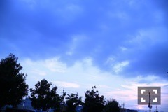
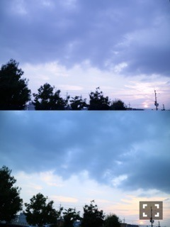

| 2016/10 06 Thu | 斎藤ちはる 松子(´>∀<｀)ゝ |
ちはるーむへようこそ！
今日は玲香主演の舞台
「嫌われ松子の一生〜赤い熱情篇〜」
をかりんと一緒に観劇してきました！
玲香凄かった。
そして脚本、演出も凄かった。
内容も凄かった。
とても"凄い"舞台でした。
映画を観たこともなく、
小説を読んだこともなく、
敢えてあらすじも調べず、
何もない状態で観たので
内容に衝撃を受けました。
あの内容を振り切って出来る玲香の
女優魂に感動を覚えました。
本当かっこよかった！
そして度々出てくる既視感。
演出が好きでした。
ここはこう繋がっているんだ、
ここからの繋がりはこうなんだ、
と話の展開や転換が上手で
段々と惹き込まれていくのが分かりました。
玲香の演技に魅了されました。
"チームく"が懐かしいし、
同じチームで演じていたことを
誇りに思えました(﹡ˆ ˆ﹡)
観に行けてよかった♡
残りラスト3公演頑張ってね！！
若月の〜黒い孤独篇〜も観てみたい...
また全然違うのかな？どうなのかな？
と気になるばかりです。
-------------------------♡
#chihashot

握手会の合間に撮った京都の夕焼け空！
空の青が強く出ていて
わたし的に好み。
これはマイカメラで撮ったんだけど
設定の違いで全然空の色や
雰囲気が変わるんだよ！

同じ景色なのに
全然違うものに見える！！
上は曇り空っぽい。紫ベース。
下は夕焼けが綺麗なオレンジ色。
同じカメラで同じ時間なのに！
奥が深いなあ(´･_･`)
-------------------------♡
♬ ChihaMusic
「ごめんなさいのKissing You」E-girlsさん
歌詞やMV、総じて可愛い！
大好きな曲です。
高校生の頃よくみんなで
踊り真似して歌ってたな〜とか
そういう青春も思い出します。
歌詞の女の子もお茶目で
こういう女の子可愛いなって思っちゃう。
MVの世界観や色合いやファッションも
派手で可愛くて個性的で好き。
勇者ヨシヒコの記者会見の生配信を
ずーっと見ていたら遅刻しそうになりました。笑
だって面白いんだもん！！
記者会見なのに！！
面白すぎるんだもん！！
ムロツヨシさんが
3シリーズで、好きな呪文ランキングが
塗り替えられると思いますよ( ˙³˙)
と仰っていたので期待。
さらにもっと明日の放送が楽しみになりました( ˘ω˘ )
この躍動感に注目！！
間違えて撮れた写真なのに
ポニーテールがいい感じに揺れてますm(_ _)m
おやすみ〜
斎藤ちはる